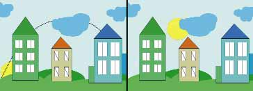
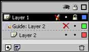

Flash 5. Шаг восьмой: движение по пути, слои
В прошлых статьях мы уже рассмотрели основные способы создания
изображений, работу с инструментами рисования, понятие символов, некоторые
способы создания анимации, а также затронули, пока косвенно, ряд других тем.
Отвечая на вопросы читателей, хочется сказать, что мы все помним, и если
какого-то вопроса коснулись вскользь, то это вовсе не значит, что о нем
забыли, просто более подробно он будет рассмотрен в будущем и, скорее всего,
на каком-либо конкретном примере для наглядности.
Сегодня же мы
снова продолжим тему, начатую несколько статей назад, а именно поговорим еще
об одном методе создания анимации. Точнее не об отдельном методе, а об уже
рассмотренном, но с добавлением некоторых новых элементов, открывающих новые
границы возможного.
В прошлой статье мы вкратце коснулись основных проблем,
связанных с использованием анимационных фрагментов при создании
интернет-странички или сайта, поэтому повторяться не будем, а лишь снова
скажем: "Не увлекайтесь слишком", так как все хорошо в меру, особенно если ваш
сайт не развлекательный, а посвящен серьезной проблеме.
Мы уже рассмотрели
ряд основных способов создания анимации, а именно:
— Покадровую анимацию,
где изображение создавалось путем ручной прорисовки каждого кадра;
— Motion
Tweening, здесь задавались начальная и конечная координаты объекта, а все
промежуточные кадры программа генерировала сама.
— Shape Tweening, это
более сложный способ создания анимации, так как в нем реализуется не только
перемещение объекта, но и его деформация. Обратите внимание, что под словом
деформация имеется в виду не только изменение формы какого-либо объекта, но и,
например, переход одной формы в другую, по сути постепенная замена одного
объекта другим.
Сегодня же мы поговорим еще об одном способе создания
анимации, который является дополнительным, так как строится на уже
рассмотренном выше, а именно на Motion Tweening. Здесь будет также
осуществляться перемещение объекта, однако, по заданной создателем
кривой.
Сперва несколько слов о том, зачем все это нужно.
Представьте,
вы создаете анимацию движения какого-либо объекта. Если вы воспользуетесь
одним из вышеперечисленных способов, то:
— в первом случае придется
прорисовать кучу кадров, что займет много времени, но зато вы сможете
проследить за каждым перемещением объекта;
— во втором случае придется
довольствоваться траекторией, выбранной компьютером; чтобы это исправить,
можно создать промежуточные ключевые кадры, что приблизит второй способ к
первому, а именно — покадровому;
— при работе с третьим методом проблемы
аналогичны второму.
Поэтому возможность создавать анимацию по заданному
пути не просто полезна, а очень полезна. Рассмотрим более подробно на
конкретном примере.

Мы решили продемонстрировать данный
эффект на примере движения солнца, причем наша задача заключалась не в
правдоподобной передаче данного эффекта, для чего не целесообразно
использовать Flash, а в создании простой, быстрой и мало весящей
анимации.
Сперва мы нарисовали фон, который напоминает детский рисунок, —
несколько разноцветных домиков, стоящих на зеленой лужайке на фоне голубого
неба, по которому проплывают синие облака. Вы можете сделать нечто подобное, а
можете взять какое-нибудь готовое изображение, на суть анимации это никак не
повлияет.
Далее мы создали новый слой, на котором будет располагаться
солнце, а так как двигаться будет только оно, то и преобразовывать мы будем
только этот второй слой. Нарисовать солнце можно любым способом, а можно и
импортировать какой-нибудь файл.
После того, как небесное светило создано,
выделите его полностью, вместе с его лучиками, если таковые имеются, используя
инструмент Arrow Tool (горячая клавиша — V). Проделайте Insert4Create Motion
Tween. После этого объект, состоящий из множества элементов, превратится в
одно целое. Если после этого действия у вас возникнет необходимость внести в
него какие-либо изменения, то для этого необходимо будет щелкнуть по нему
двойным щелчком мыши, после чего все, что его окружает, станет покрыто белой
пленкой, а он снова будет разбит на составляющие. Для того чтобы вернуться к
обычному режиму работы, достаточно щелкнуть дважды левой клавишею мыши в любой
точке пространства, вне редактируемого объекта.
Обратите внимание на то,
что все дальнейшие действия будут касаться слоя с солнцем, поэтому на нем
возьмите первый кадр и перетащите его мышью вперед, после чего полоса должна
стать белой. Щелкните по нему правой клавишею мыши и из раскрывающегося списка
выберите команду Insert Frame, верните кадр назад.
Далее выделите последний
кадр мышью и переместите объект в другое место, в результате первый и
последний кадры соединяться стрелкой и превратятся в обычную анимацию Motion
Tweening. О ее возможностях было рассказано в одной из прошлых статей, поэтому
на этом вопросе останавливаться не будем, а заметим лишь, что для того, чтобы
ее просмотреть, следует нажать клавишу Enter или проделать
Control4Play.
Следующим шагом будет реализация непосредственного движения
по заданной кривой, для чего необходимо проделать следующее: Insert4Motion
Guide.
Далее следует щелкнуть по первому кадру в образовавшемся надслое
правой клавишею мыши и из раскрывающегося меню выбрать Insert
Keyframe.
Возьмите инструмент Pencil и нарисуйте кривую, по которой должен
двигаться ваш объект, (солнце), другими словами — создайте
траекторию.
Вернитесь на слой с солнцем и, выбрав инструмент Arrow Tool,
активизируйте режим Snap to Object.
Щелкните по первому кадру на слое с
солнцем и установите его в начало кривой, затем по последнему — и привяжите к
концу.
После этого можно просмотреть анимацию, в результате солнце должно
двигаться по кривой.
На рисунке представлены два кадра: на первом солнце
находится в своем первоначальном положении, а точками указана траектория, на
втором — светило уже немного сдвинулось.
При желании можно обратиться к
палитре Frame и внести некоторые коррективы в движение объекта. Например,
задать ускорение или вращение. Подробнее о настройках, которые можно встретить
здесь, написано в статье, посвященной Motion Tweening.
После того, как с
реализацией эффекта движения по пути стало более-менее понятно, обратимся к
менее эффектному на первый взгляд явлению, без которого, однако, не обойтись,
особенно при создании сложных изображений, а именно к слоям.
Для чего они
нужны? В принципе, для того же, для чего и во всех других графических
редакторах. Они упрощают работу, не давая запутаться в многочисленных
объектах. С их помощью устанавливается порядок следования объектов, причем
если один объект, расположенный на одном слое, и перекрывает другой,
находящийся на ином слое, то при их относительном перемещении верхний не
сотрет части нижнего.
Что касается порядка следования, то вы обратили,
наверно, внимание, что в прошлом примере солнце находилось за домами и тучами
— такой результат был достигнут благодаря тому, что его слой был помещен под
фоновым.
Несомненным преимуществом работы со слоями в рассматриваемом
графическом редакторе, а именно во Flash, является то, что здесь реализована
возможность анимирования каждого слоя вне зависимости от других. Причем,
обратите внимания, что воздействиям подвергаются не только разные объекты, —
можно совмещать и различные способы анимации, о которых говорилось в начале
статьи.

На рисунке представлена палитра
слоев, взятая с анимации, процесс создания которой был описан выше. В данной
палитре есть два слоя:
Layer 1 — слой с фоном (дома, облака,
трава...).
Layer 2 — слой с солнцем.
И один надслой: Guide: Layer 2, в
котором содержится путь движения солнца.
Обратите внимание на пиктограммы,
расположенные справа.
Пиктограмма глаза символизирует видимость слоя — там,
где расположен путь, она отключена, так как видеть его нам вовсе не надо
(рисунок, расположенный правее, с невидимым путем, левее — видимым).
Замок
означает блокировку, которая поставлена на фоновом слое. Это сделано для того,
чтобы в процессе создания анимации случайно не внести каких-либо изменений
туда, куда не следует, поэтому если активизировать такой слой, то рядом
появляется изображение перечеркнутого карандаша, сообщающее о том, что
преобразования на данном слое производиться не могут.
Цветные квадратики,
расположенные справа от каждого слоя, обозначают режим просмотра. Если они
закрашены, как на приведенном примере, то вы увидите объекты целиком: если
щелкнуть по такой пиктограмме, то заливка пропадет и рисунок будет представлен
в контурном виде.
Далее внизу располагаются три иконки, позволяющие
выполнять некоторые команды, а именно:
— Insert Layer — пиктограмма с
изображением страницы с плюсом. Щелкнув по ней, вы тем самым создадите новый
слой, расположенный над активным в момент создания.
— Add Guide Layer —
пиктограмма страницы с волнистой линией. С помощью данной пиктограммы
создается надслой, значение которого было разобрано в примере создания
анимации, представленном выше.
— Delete Layer — пиктограмма с мусорной
корзиной. Данная иконка применяется для удаления ненужного слоя.
Для
изменения порядка следования слоев можно воспользоваться мышью и, просто
зажимая левую клавишу, перемещать слои относительно друг друга.
Для того
чтобы переименовать слой, что используется очень часто, особенно если
изображение сложное, необходимо дважды щелкнуть левой клавишею мыши по нему,
после чего ввести новое имя.
Кроме того, можно изменять некоторые параметры
слоя в дополнительном меню, вызываемом двойным щелчком мыши. Здесь можно
устанавливать по усмотрению пользователя цвет слоя в палитре, то есть его цвет
в контурном режиме, можно поставить или убрать замок, сделать видимым слой
или, наоборот, спрятать его.
Кроме того, можно поменять тип слоя. Из тех, с
которыми мы сталкивались, это Normal и Guide, об остальных речь пойдет в
следующих статьях.
Кроме того, есть возможность активизировать контурный
режим.
Здесь даны лишь краткие сведения о слоях. Подробнее об этом можно
будет узнать в последующих статьях, где мы обязательно коснемся незатронутых
здесь вопросов, таких, например, как различные типы слоев, что станет понятно
только после пояснения на конкретных примерах.
Галина
Корабельникова
mailto:Корабельникова[email protected]